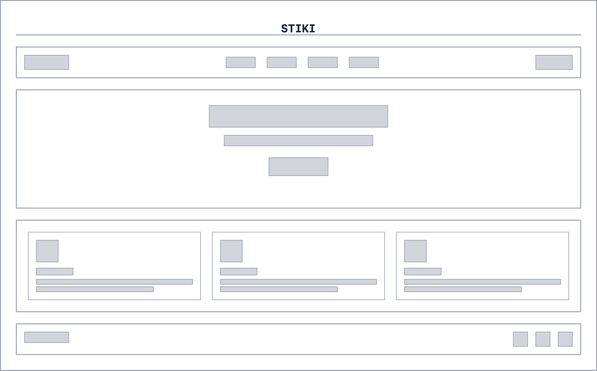
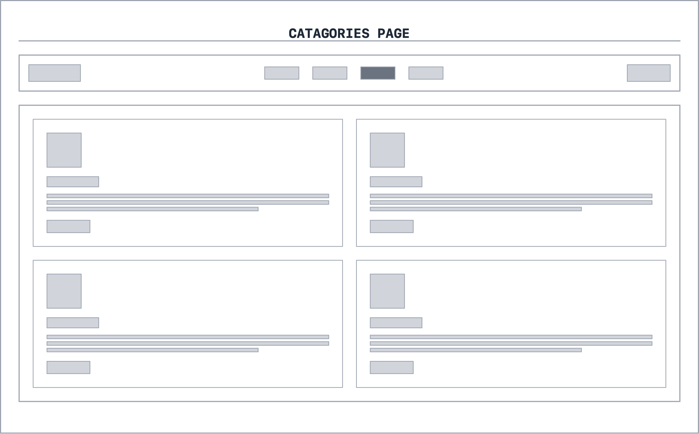
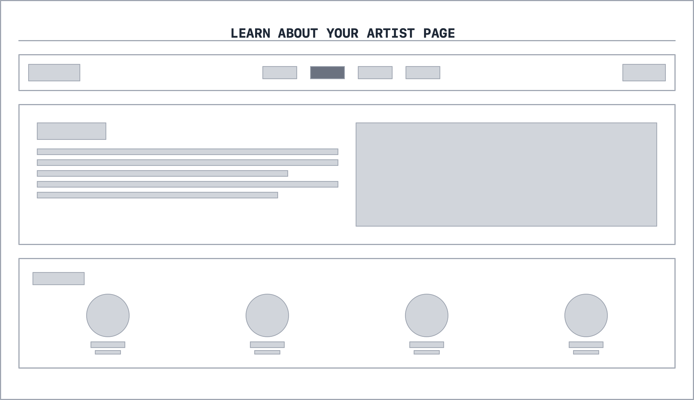
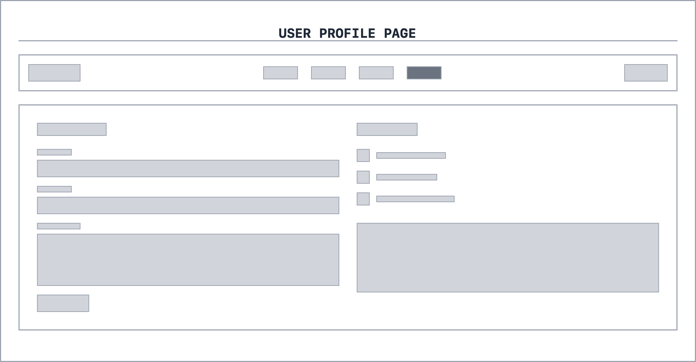

WireFrames
My name is Michelle Barrera and My Project name is Stiki.Stiki will be a website for people who enjoy to follow up their text with a cute digital sticker or even a funny meme. It's for evryone! Below are the my drafted wireframe images.
WireFrame #1: Homepage
This will be the Homepage to my website I definetley was inspired to give it that modern look. Not sure yet, just a draft.
WireFrame #2: Catagories
This will be a more extended version of catagory section in the homepage, so it's a page dedicated to sorting all these digital stickers.
WireFrame #3: Artist
This is another Sub-Page that will be dedicated to learning more about Artists, You can also view the artist you follow on this page and see what they've uploadeed.
WireFrame #4: Profile
This Sub-Page will be dedicated for the user to edit/customize their profile, you can also see purchases, saved stickers, following, all the user personalization settings will be on here.
